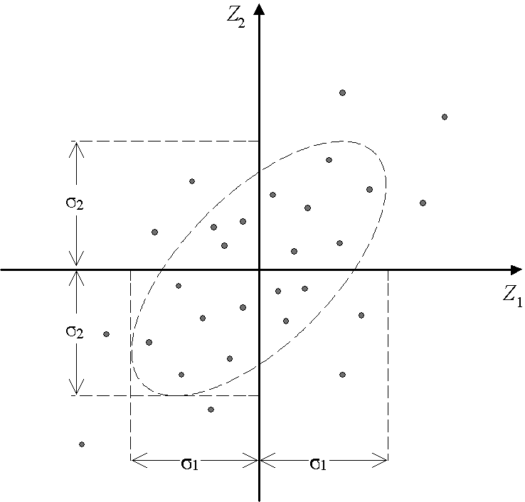
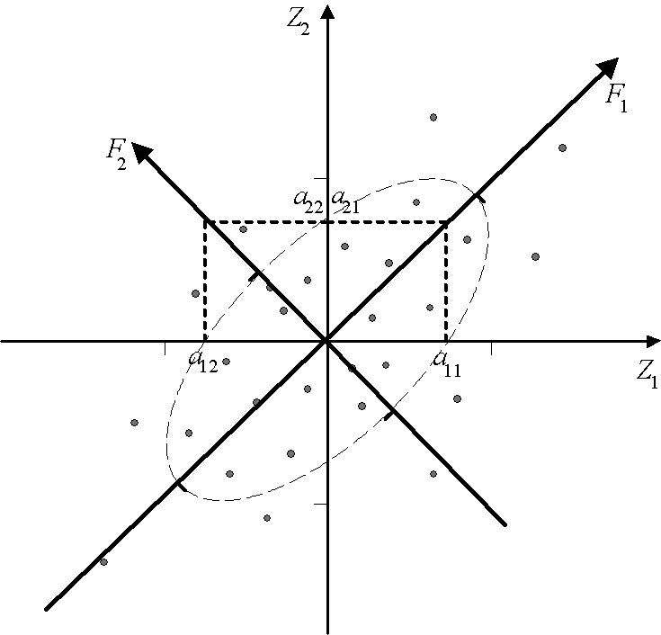
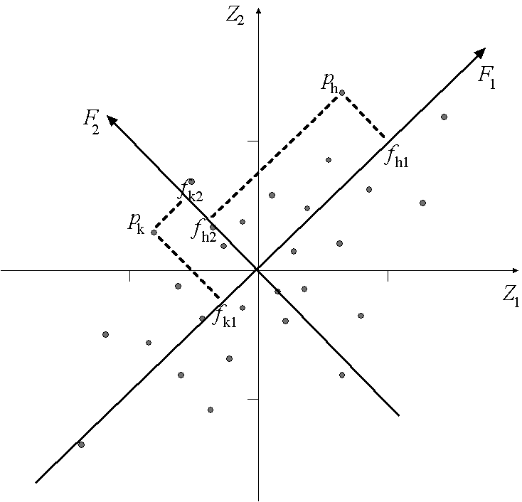
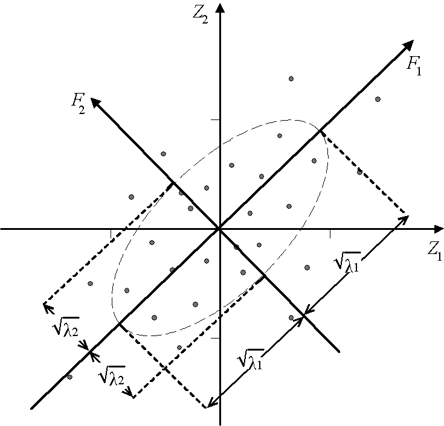
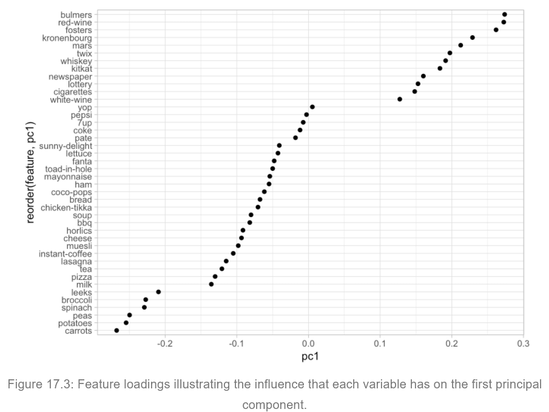
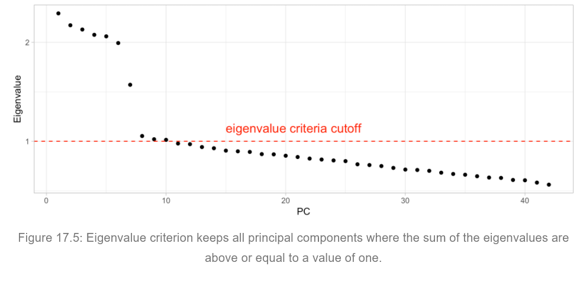

Week06: Geometric Interpretation of Principal Component Analysis
1 Geometric Interpretation of Principal Component Analysis
1.1 Dimension Reduction
Principle component analysis aims at finding underlying linear combinations of the original features that
- that capture the variation in the features as closely as possible,
- bundle redundant features (i.e., highly correlated) together into a principal component,
- leads to component scores (linear combination) of the original variables, which are mutually uncorrelated (what is the advantage?), and
- use the component loadings (correlation between the a component and a feature) for interpretation purposes of the component scores.
In general, there can be as many principal components extracted from the \(n \times p\) feature matrix \(\mathbf{X}\) as there are features \(p\).
However, principal components that capture only a little variation of the features (i.e., information) are not relevant and, therefore, should be ignored.
Principle component analysis preferably starts by using standardized features (i.e., mean of zero and variance of one).
Principle component analysis can only be applied on metric features.
Dropping irrelevant components will lead to just a small loss of information comprised in the original \(n \times p\) feature matrix \(\mathbf{X}\) and thus provides a close approximation \(\mathbf{X}^*\) of the information in the original feature matrix \(\mathbf{X}\).
Due to the principal components being uncorrelated, each component captures unique information compared to the other components.
Principal component analysis
- measures the unique variation (uniqueness versus communality) in each feature not covered by the used components, and
- it can rotate the component loadings so that the correlations between some features and a component either are close to zero or becomes close to one (or minus one).
This rotation is called varimax. This allows for a cleaner interpretation of the “meaning” of each component while not changing the total variation explained by the set of selected components. Oblique rotations lead to correlated component scores.
1.2 Geometrical Interpretation of Principal Components and Eigenvalues in 2D
1.2.1 Review: z-transformation and the correlation matrix
The following discussion is mainly visual, but benefits from matrix algebra knowledge.
Let \(\mathbf{x}\) and \(\mathbf{y}\) be to random feature vectors with means \(\bar{x}\) and \(\bar{y}\) as well as standard deviations \(s_x^2\) and \(s_y^2\), respectively.
The z-transformation transforms the vector \(\mathbf{x}\) to \(\mathbf{z}_1\) and analog the vector \(\mathbf{y}\) to \(\mathbf{z}_2\) by
\[z\begin{pmatrix} x_1 \\ x_2 \\ \vdots \\ x_n \end{pmatrix} \to \mathbf{z}_x = \begin{pmatrix} (x_1 - \bar{x}) / s_x \\ (x_2 - \bar{x}) / s_x \\ \vdots \\ (x_n - \bar{x}) / s_x \end{pmatrix}.\]
The new vectors \(\mathbf{z}_1\) and \(\mathbf{z}_2\) have a mean of zero and a standard deviation of one.
- The correlation between \(\mathbf{x}\) and \(\mathbf{y}\) is defined as
\[\begin{aligned} \text{corr}(\mathbf{x}, \mathbf{y}) &= \frac{1}{n} \cdot \frac{\sum_{i=1}^{n}(x_i - \bar{x}) \cdot (y_i - \bar{y})}{s_x \cdot s_y} \\ &= \tfrac{1}{n} \cdot \sum_{i=1}^{n}\left((x_i - \bar{x})/s_x\right) \cdot \left((y_i - \bar{y})/s_y\right) \\ &= \tfrac{1}{n} \cdot \sum_{i=1}^{n} z_{1i} \cdot z_{2i} \\ &= \tfrac{1}{n} \cdot \mathbf{z}_1^T \cdot \mathbf{z}_2 \end{aligned}\]
and can be written, therefore, in terms of a product between the two vectors of \(\mathbf{z}_1\) and \(\mathbf{z}_2\).
Let the \(p\) variables in a matrix \(\underset{n \times p}{\mathbf{X}}\) be standardized by their means and standard deviations. The resulting standardized matrix is \(z(\mathbf{X}) \to \mathbf{Z}\).
The correlation matrix \(\mathbf{R}\) among the \(p\) variables can then be easily calculated in terms of z-transformed variables by matrix multiplication:
\[\underset{p \times p}{\mathbf{R}} = \tfrac{1}{n} \cdot \mathbf{Z}^T \cdot \mathbf{Z}\]
- Usually, the correlation matrix provides the input to PC but alternatively also a covariance matrix can be used if the variance of individual features reflects their specific information content.

Figure 1: A scatter plot between two z-transformed variables
Two positively correlated bivariate normal distributed variables.
Approximately 68% of the cases lie within the normal ellipse.
Due to the z-transformation:
- The point \((0,0)\) is in the center of the distribution.
- The spread along the \(Z_1\) and \(Z_2\) axes is identical \(\sigma_1 = \sigma_2 = 1\).
The \(Z_1\) and \(Z_2\) axes are orthogonal (both are at a rectangular or 90° angle).
Definition orthonormal: let \(\mathbf{x}\) and \(\mathbf{y}\) be two vectors with identical number of components \(n\).
- If their cross-product \(\mathbf{x}^T \cdot \mathbf{y}\) is zero, i.e., \(\sum_{i=1}^{n} x_i \cdot y_i = 0\), then they are said to be orthogonal.
- In addition, if their internal cross-products \(\mathbf{x}^T \cdot \mathbf{x} = 1\) and \(\mathbf{y}^T \cdot \mathbf{y} = 1\) are one, i.e., they have a length of one, then they are called orthonormal.
- Corollary: If two z-transformed variables are orthogonal then they are also uncorrelated.
The coordinates of the points (observations) are given by
\[\mathbf{Z} = \begin{pmatrix} z_{11} & \cdots & z_{n1} \\ z_{12} & \cdots & z_{n2} \end{pmatrix}^T\]
1.3 Components as new Coordinate System by Orthogonal Rotation

Figure 2: Rotation of the original reference system to new component system
The first component axis fits the main axis of the ellipse. It captures most of the variation in the point cloud.
The second component axis is orthogonal to the first eigenvector axis and stretches along the minor axis of the ellipse. In this bivariate plot it captures the remaining variation.
Scenario: What happens when both variables \(Z_1\) and \(Z_2\) are perfectly correlated?
\(\Rightarrow\) One component axis captures all the variations, and the other component axis captures none, i.e., it becomes irrelevant.
The relationship between the old and the new coordinate system is indicated by the loading coefficients of the rotation matrix
\[\mathbf{A} = \begin{pmatrix} a_{11} & a_{12} \\ a_{21} & a_{22} \end{pmatrix} = (\mathbf{a}_1 \mid \mathbf{a}_2)\]
The loading coefficients have been standardized so that their lengths are \[a_{11}^2 + a_{21}^2 = 1 \text{ and } a_{12}^2 + a_{22}^2 = 1\]
Furthermore, the coefficients of \(\mathbf{a}_1\) and \(\mathbf{a}_2\) are orthogonal \(a_{11} \cdot a_{12} + a_{21} \cdot a_{22} = 0\) or \(\mathbf{a}_1^T \cdot \mathbf{a}_2 = 0\).
Thus, the rotation matrix \(\mathbf{A}\) is orthonormal: \[\mathbf{A}^T \cdot \mathbf{A} = \mathbf{I} \Leftrightarrow \mathbf{A}^{-1} \cdot \mathbf{A} = \mathbf{I}\]
1.4 Coordinates of Points in New Coordinate System (Component Scores)

Figure 3: Coordinates (component scores) of points in the new component system
Each data point \(\mathbf{p}_i = (z_{i1}, z_{i2})^T\) in the original coordinate system has new but equivalent coordinates in the rotated component coordinate system \(\mathbf{p}_i^* = (f_{i1}, f_{i2})^T\).
The first component axis (score) is expressed by \(\mathbf{f}_1 = a_{11} \cdot \mathbf{z}_1 + a_{21} \cdot \mathbf{z}_2 = \mathbf{Z} \cdot \mathbf{a}_1\) and the second eigenvector axis is expressed by \(\mathbf{f}_2 = a_{12} \cdot \mathbf{z}_1 + a_{22} \cdot \mathbf{z}_2 = \mathbf{Z} \cdot \mathbf{a}_2\), that is in matrix terms,
\[\overset{\begin{matrix}\mathbf{f}_1 & \mathbf{f}_2\end{matrix}}{\begin{pmatrix} a_{11}z_{11} + a_{21}z_{12} & a_{12}z_{11} + a_{22}z_{12} \\ a_{11}z_{21} + a_{21}z_{22} & a_{12}z_{21} + a_{22}z_{22} \\ \vdots & \vdots \\ a_{11}z_{n1} + a_{21}z_{n2} & a_{12}z_{n1} + a_{22}z_{n2} \end{pmatrix}} = \overset{\begin{matrix}\mathbf{z}_1 & \mathbf{z}_2\end{matrix}}{\begin{pmatrix} z_{11} & z_{12} \\ z_{21} & z_{22} \\ \vdots & \vdots \\ z_{n1} & z_{n2} \end{pmatrix}} \cdot \begin{pmatrix} a_{11} & a_{12} \\ a_{21} & a_{22} \end{pmatrix}\]
- The two coordinate vectors \(\mathbf{f}_1\) and \(\mathbf{f}_2\) are uncorrelated because they are orthogonal \(\mathbf{f}_1^T \cdot \mathbf{f}_2 = 0\) and centered around zero.
1.5 Identification of new Component System through Constrained Optimization

Figure 4: Eigenvalues and variance of along component axes
The eigenvalues \(\lambda_1\) and \(\lambda_2\) measure the spread, or variance, of the ellipse along both component axes, that is, the variance of the data points along the first component axis is \(Var(\mathbf{f}_1) = \lambda_1\) and along the second component axis it is \(Var(\mathbf{f}_2) = \lambda_2\).
The eigenvalues are distinctly ordered with \(\lambda_1 \geq \lambda_2 \geq 0\)
The eigenvectors are calculated such that
- \(\max_{a_{11}, a_{21}} Var(\mathbf{f}_1)\) subject to \(a_{11}^2 + a_{21}^2 = 1\) for the first component and
- the second component is calculated such that \(\max_{a_{12}, a_{22}} Var(\mathbf{f}_2)\) with \(a_{12}^2 + a_{22}^2 = 1\) subject to the constraint \(\mathbf{f}_1^T \cdot \mathbf{f}_2 = 0\)
The eigenvalues sum to \(\lambda_1 + \lambda_2 = Var(Z_1) + Var(Z_2) = 2\), which is equal to sum of the variance on the diagonal of the \(2 \times 2\) correlation matrix \(\mathbf{R}\). Therefore, no variation is lost or added in the rotated component coordinate system.
Because the correlation matrix \(\mathbf{R}\) between \(\mathbf{z}_1\) and \(\mathbf{z}_2\) is positive definite, both eigenvalues are greater than zero (or in an extreme case equal to zero).
For more than \(p > 2\) original variables we would get the new coordinates \(\mathbf{f}_1, \mathbf{f}_2, \ldots, \mathbf{f}_p\) with \(Var(\mathbf{f}_1) = \lambda_1, Var(\mathbf{f}_2) = \lambda_2, \ldots, Var(\mathbf{f}_p) = \lambda_p\) with \(\lambda_1 \geq \lambda_2 \geq \cdots \geq \lambda_p \geq 0\)
If \(M\) with \(M < p\) components are used then some information (variance) is lost. Usually, those components with the lowest eigenvalues (variances) are dropped. This leads to the decomposition of the total variance into
\[\underbrace{\sum_{j=1}^{p}\sum_{i=1}^{n} z_{ij}^2}_{\text{total variation}} = \underbrace{\sum_{m=1}^{M}\frac{1}{n}\sum_{i=1}^{n}f_{im}^{2}}_{\text{variation captured by M components}} + \underbrace{\frac{1}{n}\sum_{j=1}^{p}\sum_{i=1}^{n}\left( z_{ij}-\overbrace{\sum_{m=1}^{M} f_{im}\cdot a_{jm}}^{z^{*}_{ij}}\right)^{2}}_{\text{MSE due to dimensionality reduction}}\]
1.5.1 Objectives of Principal Component Analysis:
Principal component analysis is an exploratory data driven method. \(\Rightarrow\) That is, it is not based on an underlying conceptional model and depends solely on the observed data.
It seeks to find a few underlying dimensions (the number of components) in the data matrix \(\mathbf{X}\) that explain the pattern of covariation in the correlation matrix. \(\Rightarrow\) It follows the concept of parsimony (complexity reduction, suppression of noisy randomness and simplification)
The component loadings define the meaning of these underlying dimensions with regards to the original variables.
\(\Rightarrow\) They actually are the correlation between the original feature \(\mathbf{z}_l\) with the component \(\mathbf{f}_k\), i.e., \(corr(\mathbf{z}_l, \mathbf{f}_k) = a_{lk}\). These correlations support the interpretation of components and give them “meaning”.

Figure 17.3: Feature loadings illustrating the influence that each variable has on the first principal component.To make a component \(\mathbf{f}_k\) easy to interpret, it should load high in absolute terms on a few variables and zero on the remaining variables.
Thus, the component can be interpreted in terms of underlying dimensions.
The underlying dimensions are generally supposed to be independent (uncorrelated) from each other.
Consequently, they become useful as input to other methods such as regression analysis or cluster analysis because they represent independent information.

Figure 17.5: Eigenvalue criterion keeps all principal components where the sum of the eigenvalues are Components: above or equal to a value of one.
1.6 Selection of the Number of Components:
No direct statistical guidelines (i.e., significance tests) are available because principal component analysis is not a model based on a statistical distribution model (no direct distribution assumptions about the underlying distributions are made).
Some guidelines are:
None of the components should explain less variation than a single feature captures.
\(\Rightarrow\) Consequently, for z-transformed features do not consider components that have an eigenvalue \(\lambda_j < 1\).
Generate a scree-plot. For datasets with many variables, one may observe a clear discontinuity (elbow rule) in the decreasing sequence of the eigenvalues. Use all components prior to that discontinuity.
Alternatively, use random numbers in a \(n \times p\) matrix and apply principal component analysis on these numbers. As long as data eigenvalues are larger than their random counterpart, they summarize relevant variation.
See the example SimPrincipalComponents.r as an example for a basic analysis using principal components.